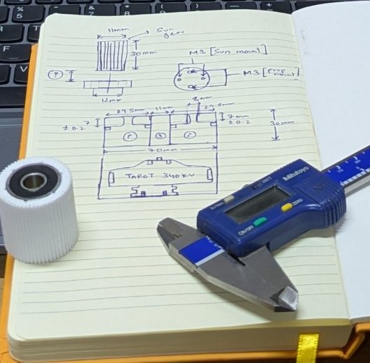
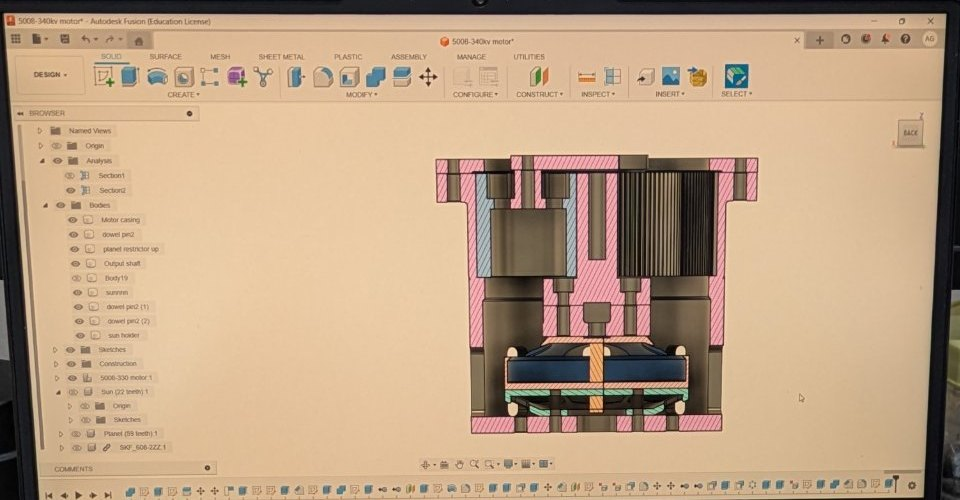
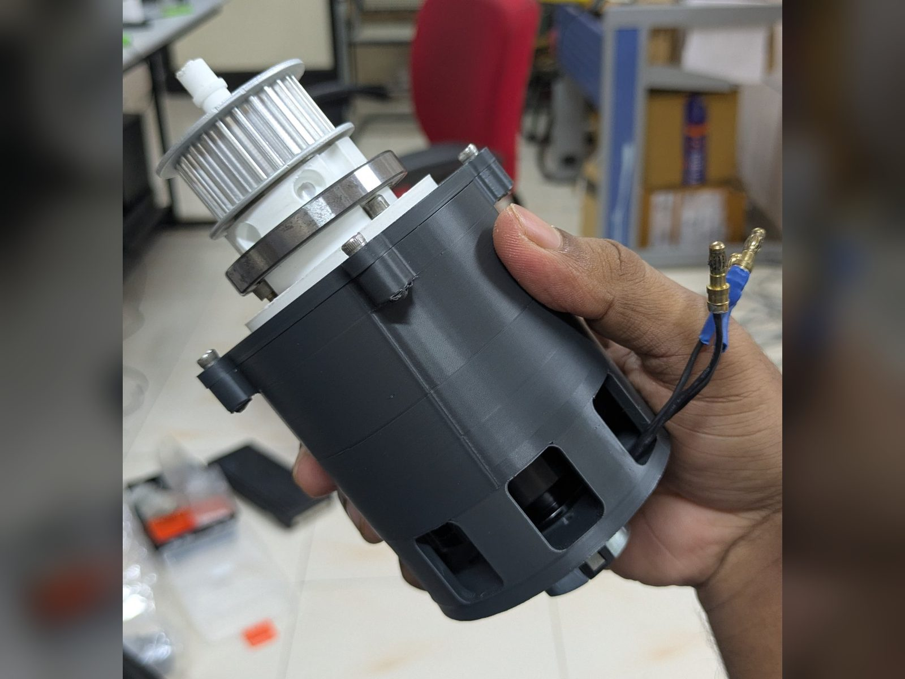
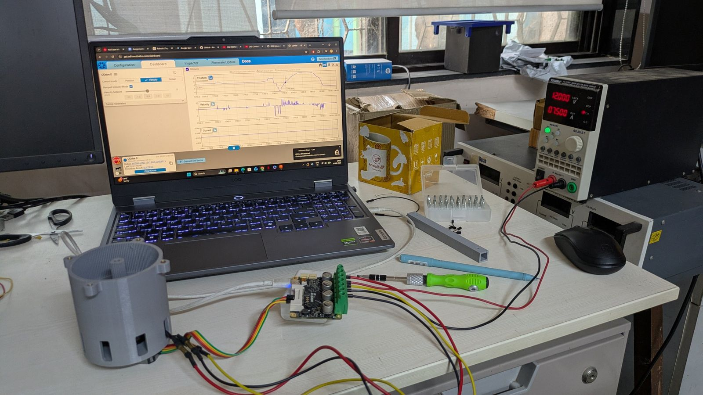

Backdrivable robotic actuator
R&D project, IIT Bombay, 2025. See the project
-
1Drawing board

Chose the Tarot 340 Kv motor from a Kt (torque per amp) trade study, then sized the gear train around it by hand.
-
2CAD

Modeled a single-stage, 3-planet epicyclic gearbox in Fusion: 22-tooth sun, 59-tooth planets and a 140-tooth ring.
-
3Hardware

Printed the gear stage and housing, then assembled the motor, AMT102 capacitive encoder and output pulley.
-
4Test

Ran it on an ODrive S1 with field-oriented control and tuned the loops by Ziegler-Nichols before it went into the leg.
- Gear ratio
- 7.36:1 22 / 59 / 140 teeth
- Peak output torque
- 8.26 N·m
- Output speed
- 1164 RPM
- Encoder
- 4096 CPR 0.087° resolution